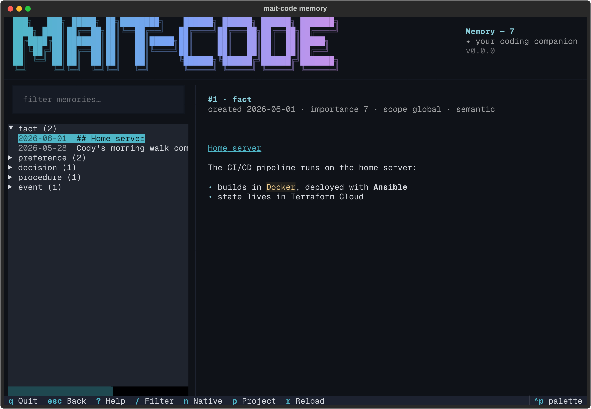
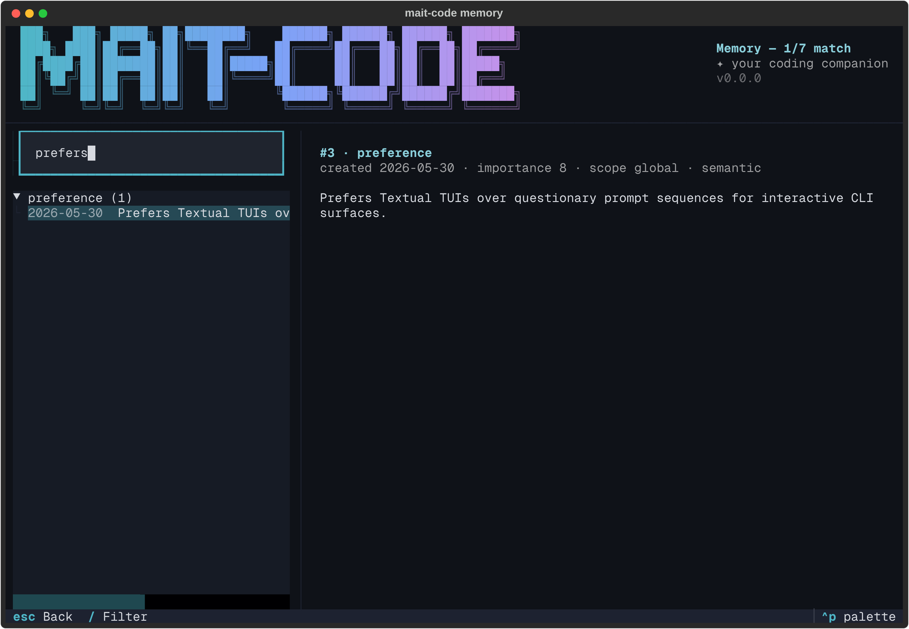
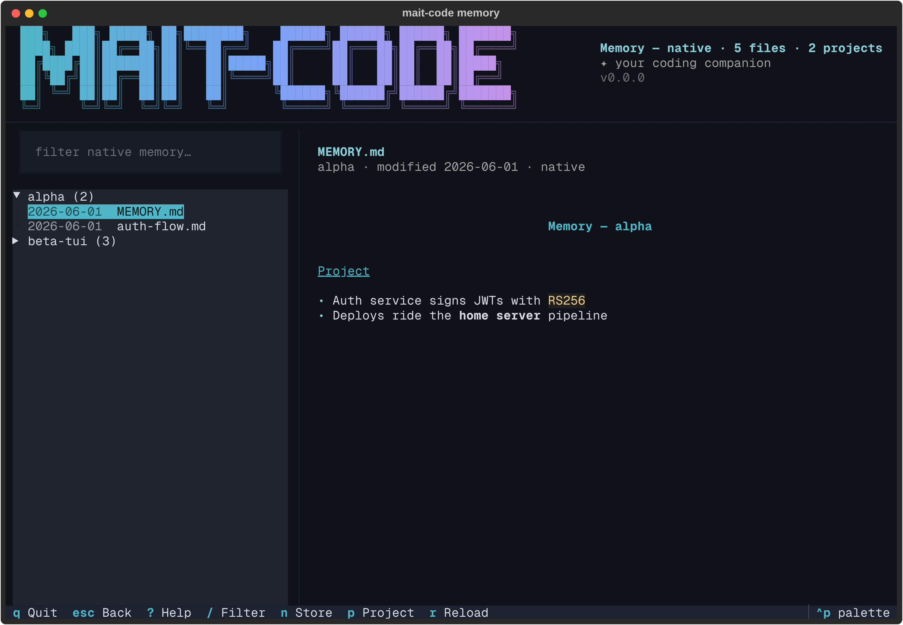

The memory browser¶
mait-code memory is a full-screen, read-only window onto everything the
companion remembers. Where How memory works explains how facts get
in and how search ranks them, this is the place you look at what's accumulated:
a tree of memories grouped by kind on the left, the selected one rendered in full
on the right, and a live filter to find the needle.

Why it exists¶
Memory is the companion's differentiator, but a store you can't see is a store you can't trust. The browser makes it tangible: scroll the tree and you can see what Claude knows about you and your projects, read each entry in full, and check its provenance — when it was created, how important it's rated, which scope it belongs to. It browses everything, across every project and scope, not just the current context, so it's the tool for "what do you actually remember?".
It is deliberately read-only. Reading is its whole job; it never edits or
deletes. Writing stays with mc-tool-memory and the
/remember, /recall and /reflect skills — keeping the place you inspect
memory separate from the places that change it, so browsing is always safe.
The layout¶
Three regions, top to bottom:
- The masthead — the shared brand banner, labelled Memory, with the live
entry count folded into its subtitle (
Memory — 6, or1/6 matchwhen filtering). - The body — a filter box over a tree on the left, the detail pane (the wider share) on the right.
- The footer — the live key hints.
The tree groups entries by type — fact, preference, decision,
insight, event, task, relationship — each group showing its count, with
the newest entries first inside it. On boot the first group is expanded and the
rest collapsed. Each leaf reads <date> <first line of the memory>, clipped to
fit, so a group is scannable without opening anything.
Reading a memory¶
Highlight a leaf and the detail pane renders it:
- a title —
#<id> · <type>, - a metadata line —
created <date> · importance <1–10> · scope <scope> · <class>, - and the body, rendered as markdown. Plain text is just a subset, so a jotted note and a richly-formatted fact both read right; single newlines are kept as line breaks, the same as the board's card bodies.
Scope tells you how widely a memory applies: global (everywhere), a project
name (across that project), or project:branch (just that branch). Class is
semantic (facts, preferences — slow to decay), episodic (events, tasks —
fast to decay), or procedural (workflows, how-tos — slowest to decay).
Finding something¶
Press / to focus the filter and type: the tree narrows live to entries whose
content matches (case-insensitive substring), every group expanding to show its
hits, and the masthead subtitle reports the narrowed count.

Enter in the filter drops you onto the results to arrow through them; Esc
steps back out. When nothing matches, the pane says so in the companion's voice
rather than going blank.
Press p to narrow by project: a picker lists every project seen in the
store, and choosing one keeps that project's entries (plus globals), with the
masthead subtitle carrying the project name. It composes with the text filter.
The native view¶
mait-code's store isn't the only curated memory layer: Claude Code keeps its
own native auto memory — per-project markdown files under
~/.claude/projects/<slug>/memory/, a MEMORY.md index plus topic files,
holding the code facts (architecture, build commands, repo gotchas) that
deliberately don't go in the store.
Press n and the browser flips to that layer: every project's native memory
files, grouped by project with file counts, regardless of where you launched
from. Highlight a file and the detail pane renders it as markdown, with the
project and modified date as its metadata. The munged directory slugs are
resolved back to readable project names best-effort.

Both views are equally read-only, and the same tools work in each: / filters
live, p narrows to one project, r re-scans. The footer's binding flips to
Store while you're in the native view — n again returns.
Off the terminal¶
Like the other TUIs, mait-code memory only opens the browser on a TTY. Piped or
redirected, it prints a grouped read-only summary instead, so it stays useful in
a log or an SSH one-liner.
Reference¶
Keys¶
| Key | Action |
|---|---|
| ↑ / ↓ (or k / j) | Move the highlight; the detail pane follows |
| Enter / Space | Expand or collapse a group |
| / | Focus the filter |
| n | Flip between the store and the native view |
| p | Narrow to one project (picker; works in both views) |
| Esc | Back to the tree (from the filter/detail); quit (from the tree) |
| r | Re-read the store (or re-scan the native files) |
| ? | Key cheat-sheet |
| Ctrl+P | Command palette (incl. theme switching) |
| q | Quit |
See also¶
- How memory works — the three tiers, extraction, scoring and decay behind what you're browsing.
mc-tool-memory— the CLI that searches, stores, supersedes and reindexes (the writes the browser deliberately doesn't do).